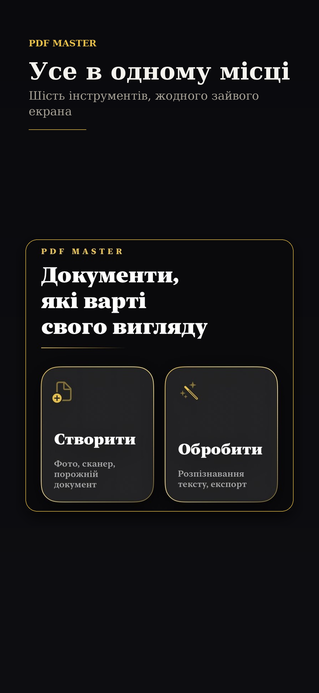
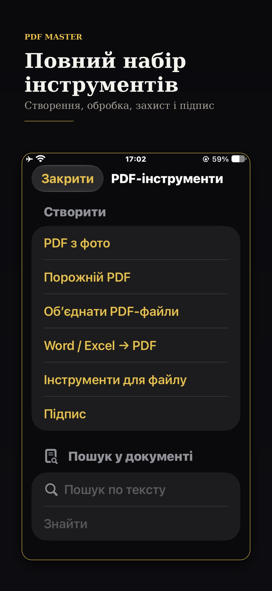
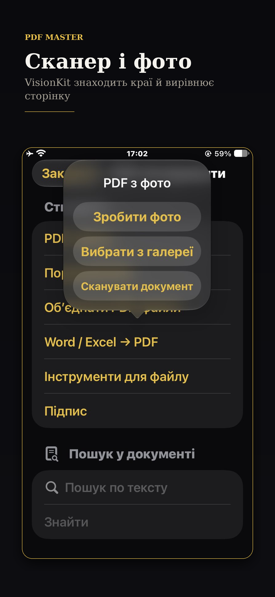
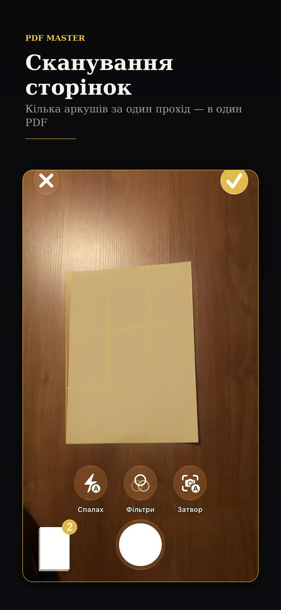
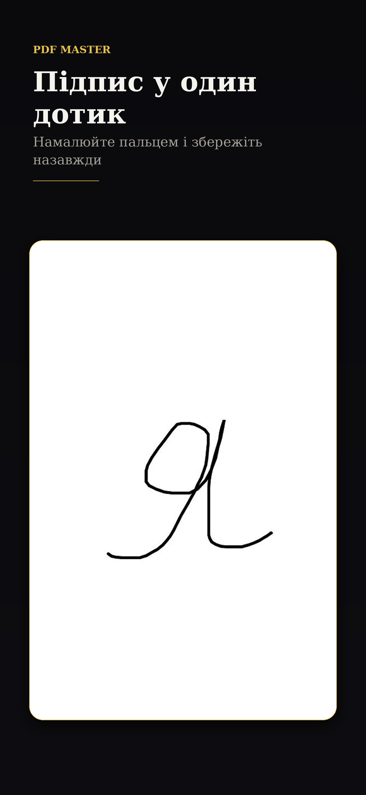
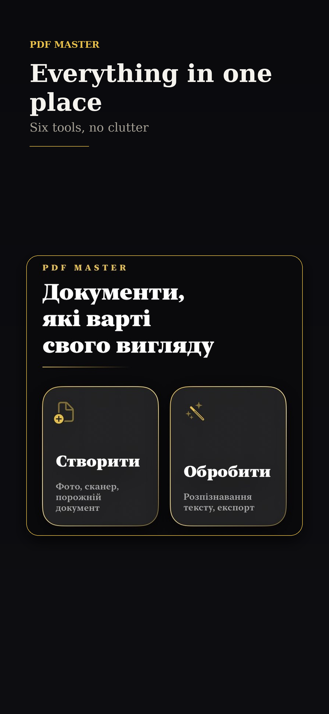
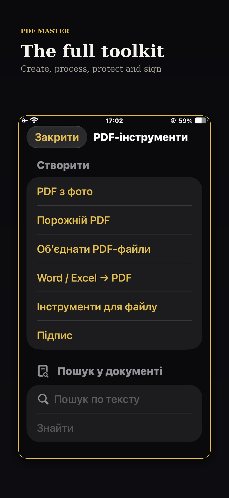
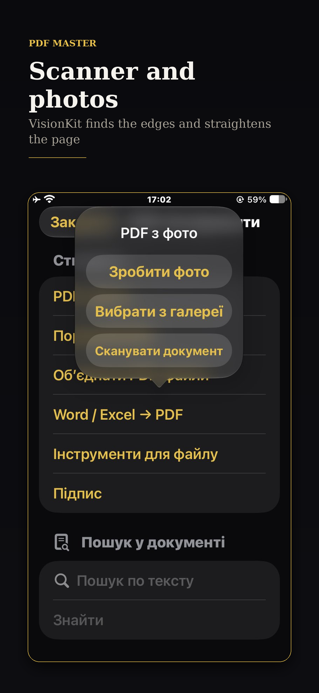
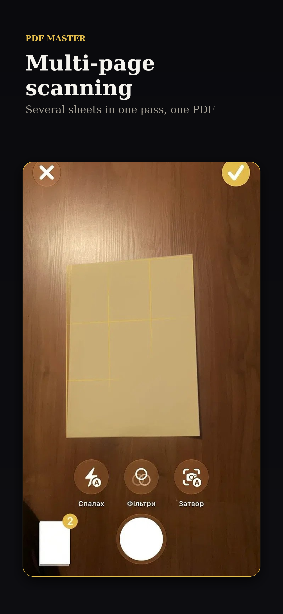
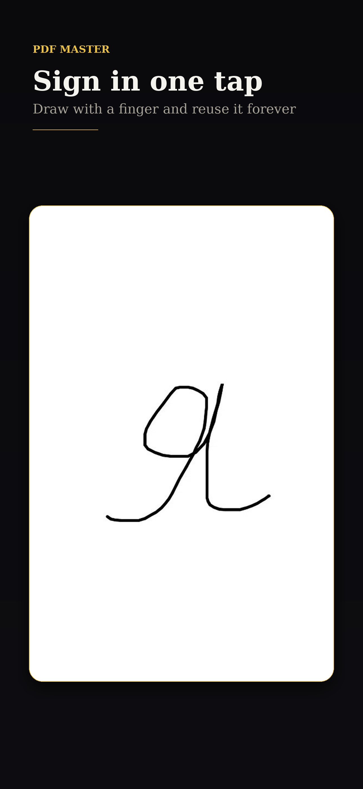

iPhone 6.7" · 1290×2796. Натисніть на картинку → утримуйте → «Зберегти зображення».

01 — Головна
02 — Інструменти
03 — Сканер і фото
04 — Сканування
05 — Підпис
01 — Home
02 — Tools
03 — Scanner
04 — Multi-page
05 — SignatureВ App Store Connect відкрийте поле Screenshots → Choose File → Фото (якщо зберегли в Фото) або Файли → Завантаження.